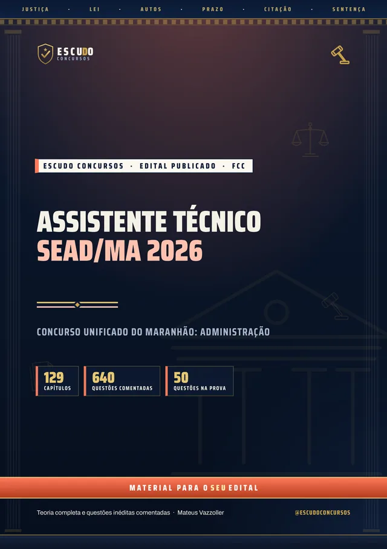
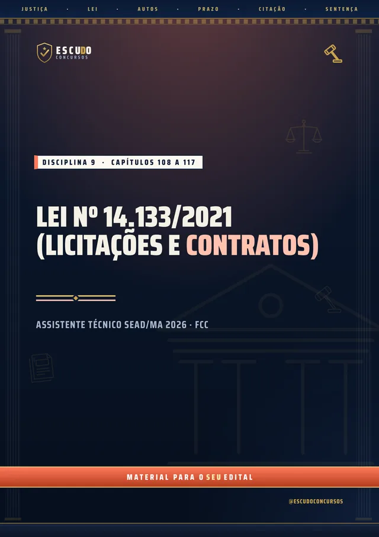
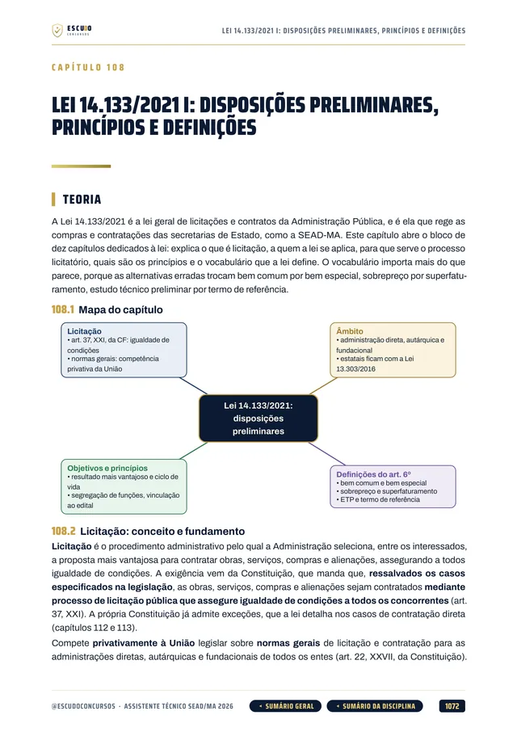
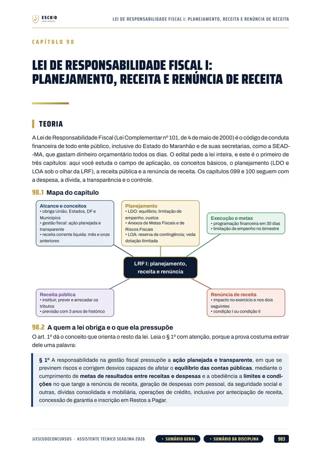
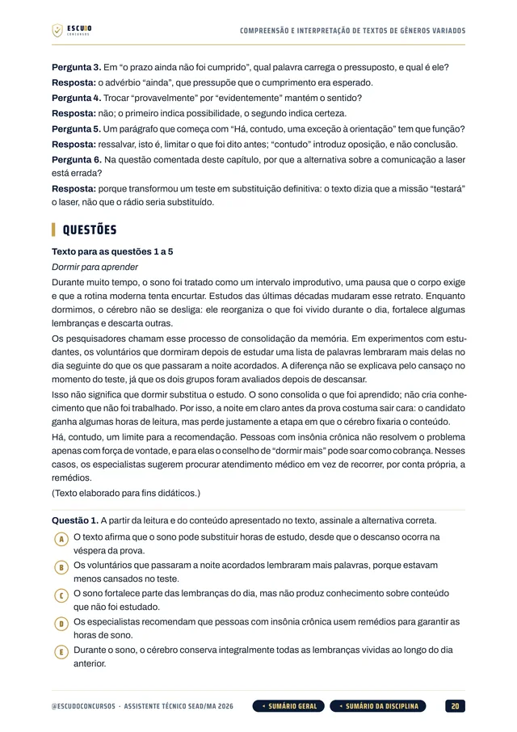
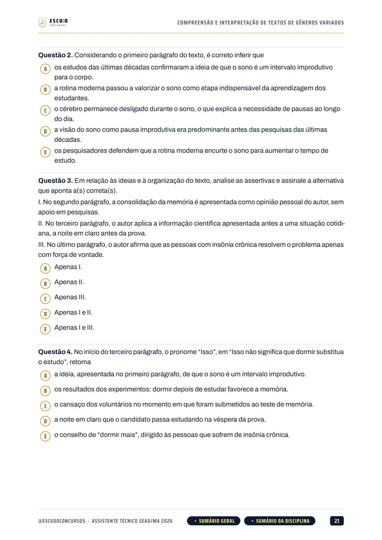
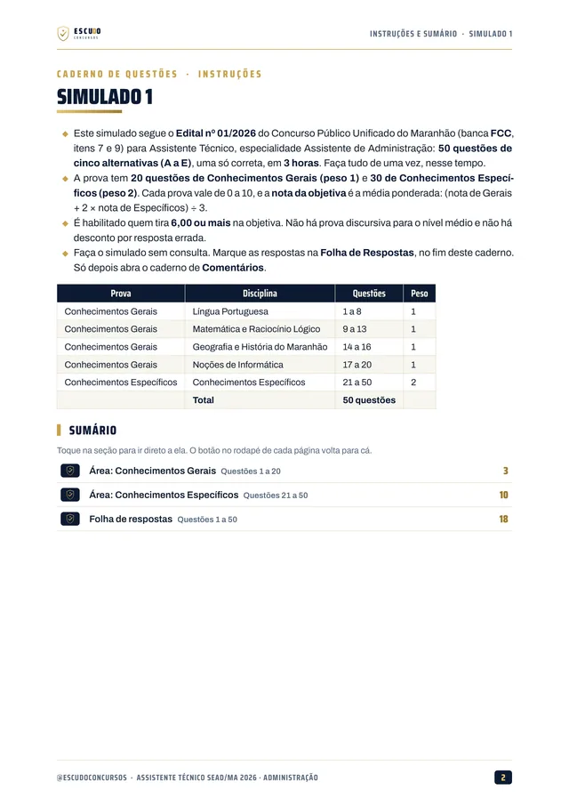
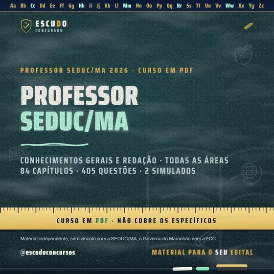

Simulado 1
No meio do caminho
Para medir onde você está e ajustar o estudo enquanto ainda dá tempo.
30 dias após a compra


640questões
comentadas
São 30 vagas de Assistente de Administração na SEAD, e o seu material cobre o edital inteiro? Curso feito a partir do Edital nº 01/2026, item por item: os Conhecimentos Gerais (Língua Portuguesa, Matemática e Raciocínio Lógico, Geografia e História do Maranhão e Informática) e os Específicos de Administração, com a Lei 14.133, a Lei 4.320 e a LRF. Atenção: as outras especialidades têm os mesmos Gerais (menos o Técnico em Informática, sem Informática nos Gerais), mas outros Específicos, e este curso é só o de Administração. O edital exige curso técnico (item 2.1.2).
De acordo com o Edital nº 01/2026, de 17/11/2026 · FCC
de R$ 47 por 21% OFF
R$37
com o cupom SEADMA37 até 29/01/2027. Pelo botão, o cupom já vai preenchido.
R$47
Curso completo, com acesso imediato.
Resposta rápida
A prova objetiva é em 04/04/2027, aplicada pela FCC (Edital de Abertura nº 01/2026, de 17 de novembro de 2026, publicado em 18/11/2026), em Balsas, Barra do Corda, Caxias, Colinas, Imperatriz, Pinheiro e São Luís. As inscrições vão de 14/12/2026 a 29/01/2027, só pela internet, com taxa de R$ 60,00 (DARE pago até 01/02/2027).
São 91 vagas de Assistente Técnico na SEAD, em oito especialidades, e 30 delas são de Assistente de Administração (mais o cadastro de reserva), com vencimento inicial de R$ 1.631,76 e carga horária de 30 horas. O requisito, segundo o edital, é o certificado de curso técnico de nível médio e a habilitação legal específica (item 2.1.2).
A prova objetiva tem 50 questões de múltipla escolha com cinco alternativas, de A a E, e dura 3 horas: 20 de Conhecimentos Gerais (peso 1) e 30 de Conhecimentos Específicos (peso 2). A nota é a média ponderada, de 0 a 10, e é preciso tirar 6,00 ou mais. Não há prova discursiva para o nível médio. O curso em PDF da ESCUDO segue o edital item por item, com 129 capítulos e 640 questões comentadas, e tem 7 dias de garantia pela Hotmart.
O concurso
O Concurso Público Unificado do Maranhão (Edital nº 01/2026, de 17/11/2026, publicado em 18/11/2026, banca FCC) reúne cinco órgãos do Poder Executivo estadual: SEAD, SEDUC, IMESC, SEPLAN e STC. A SEAD abriu 91 vagas de Assistente Técnico em oito especialidades, e 30 delas são de Assistente de Administração (mais o cadastro de reserva), com vencimento inicial de R$ 1.631,76 e carga horária de 30 horas. O requisito, segundo o edital, é o certificado de curso técnico de nível médio e a habilitação legal específica (item 2.1.2).
As inscrições vão de 14/12/2026 a 29/01/2027, só pela internet, no site da FCC, com taxa de R$ 60,00 (DARE pago até 01/02/2027). A prova objetiva é em 04/04/2027, em Balsas, Barra do Corda, Caxias, Colinas, Imperatriz, Pinheiro e São Luís.
A prova objetiva tem 50 questões de múltipla escolha com cinco alternativas, de A a E, e dura 3 horas: 20 de Conhecimentos Gerais (peso 1) e 30 de Conhecimentos Específicos (peso 2). A nota é a média ponderada, de 0 a 10, e é preciso tirar 6,00 ou mais. Não há prova discursiva para o nível médio. O curso em PDF da ESCUDO segue o edital item por item, com 129 capítulos e 640 questões comentadas.
Atenção às especialidades: Os Conhecimentos Gerais (Língua Portuguesa, Matemática e Raciocínio Lógico, Geografia e História do Maranhão e Noções de Informática) são os mesmos nas outras especialidades de Assistente Técnico da SEAD; a exceção é o Técnico em Informática, que não tem Noções de Informática nos Gerais (edital, Anexo de conteúdo programático). Os Conhecimentos Específicos deste curso são os de Administração. Quem vai concorrer a Contabilidade, Segurança do Trabalho, Enfermagem do Trabalho, Informática, Agrimensura, Agropecuária ou Edificações aproveita só os Gerais.
| Parte da prova | Questões | Capítulos |
|---|---|---|
| Conhecimentos Gerais (peso 1): Língua Portuguesa, Matemática e Raciocínio Lógico, Geografia e História do Maranhão e Informática | 20 | 81 |
| Conhecimentos Específicos de Administração (peso 2): Administração Geral, Financeira e Orçamento, Materiais, Lei 14.133 e Gestão de Pessoas | 30 | 47 |
| Mais o capítulo 001, sobre como é a prova e como usar o curso. O edital não diz quantas das 20 questões de Gerais são de cada disciplina. | 50 | 129 |
O formato
Você estuda lendo, no seu ritmo, pela área de membros da Hotmart ou com os arquivos baixados. O curso foi feito a partir do Edital nº 01/2026, item por item, na ordem do conteúdo programático, com a legislação conferida no texto vigente em 18/11/2026, a data de publicação do edital. As questões seguem o formato da prova: cinco alternativas, de (A) a (E).
Páginas reais do PDF
Toque numa página para ver em tamanho maior.





100% em PDF · Garantia de 7 dias · Pagamento pela Hotmart
O que você recebe
Curso em PDF organizado em 18 módulos pelas disciplinas e blocos do edital, com 1.299 páginas no padrão visual ESCUDO, para ler no computador, no tablet, no celular ou no app da Hotmart. Não há videoaulas.
129 capítulos do edital: Língua Portuguesa, Matemática e Raciocínio Lógico, Geografia e História do Maranhão e Noções de Informática (Gerais) e os Conhecimentos Específicos de Administração.
640 questões inéditas com 5 alternativas, de (A) a (E), todas com gabarito comentado: por que a correta está correta e onde erra cada uma das outras quatro.
Lei 14.133/2021 em 10 capítulos (arts. 1º a 176), com os valores atualizados pelo Decreto 12.807/2025 e as citações conferidas com o texto oficial.
Lei 4.320/1964 e Lei de Responsabilidade Fiscal em 5 capítulos, mais fluxo de caixa, demonstrações financeiras e orçamento.
Geografia e História do Maranhão em 18 capítulos, que o Unificado cobra em todos os cargos: território, economia, Balaiada, cultura, literatura e atualidade.
Teoria com recursos para memorizar: mapa de cada capítulo, esquemas, pegadinhas, quadros de “não confunda”, revisão relâmpago e teste de memória. Navegação clicável: do sumário você vai direto à disciplina e ao capítulo, e volta pelos botões do rodapé.
2 simulados inéditos de 50 questões de 5 alternativas, no formato e com os pesos da prova da FCC, com folha de respostas e caderno de comentários. O Simulado 1 é liberado 30 dias após a compra e o Simulado 2, 60 dias após a compra.

Área de membros
| Módulo | Conteúdo | Liberação |
|---|---|---|
| M0 Comece aqui | Apresentação + capítulo 001 (como é a prova e como usar o curso). Bônus: PDF completo para baixar e imprimir | Na compra; o PDF completo no 8º dia |
| M1 Língua Portuguesa I | Capítulos 002 a 010 | Na compra |
| M2 Língua Portuguesa II | Capítulos 011 a 019 | Na compra |
| M3 Língua Portuguesa III | Capítulos 020 a 028 | Na compra |
| M4 Matemática | Capítulos 029 a 037 | Na compra |
| M5 Raciocínio Lógico | Capítulos 038 a 044 | Na compra |
| M6 Geografia do Maranhão | Capítulos 045 a 053 | Na compra |
| M7 História e cultura do Maranhão | Capítulos 054 a 062 | Na compra |
| M8 Noções de Informática I | Capítulos 063 a 072 | Na compra |
| M9 Noções de Informática II | Capítulos 073 a 082 | Na compra |
| M10 Administração Geral e Estratégica | Capítulos 083 a 090 | Na compra |
| M11 Liderança, projetos e RSC | Capítulos 091 a 093 | Na compra |
| M12 Administração Financeira e Orçamento | Capítulos 094 a 100, com a Lei 4.320/1964 e a LRF | Na compra |
| M13 Materiais e Logística | Capítulos 101 a 107 | Na compra |
| M14 Lei 14.133/2021 I | Capítulos 108 a 112 | Na compra |
| M15 Lei 14.133/2021 II | Capítulos 113 a 117 | Na compra |
| M16 Gestão de Pessoas I | Capítulos 118 a 123 | Na compra |
| M17 Gestão de Pessoas II e Comportamento Organizacional | Capítulos 124 a 129 | Na compra |
| M18 Simulado 1 | 50 questões, folha de respostas e caderno de comentários | 30 dias após a compra |
| M19 Simulado 2 | 50 questões, folha de respostas e caderno de comentários | 60 dias após a compra |
Treino no formato da prova
Cada simulado tem 50 questões de 5 alternativas, na divisão e com os pesos da prova da FCC (Língua Portuguesa 8, Matemática e Raciocínio Lógico 5, Geografia e História do Maranhão 3 e Informática 4, de Conhecimentos Gerais, mais 30 de Conhecimentos Específicos), com folha de respostas e caderno de comentários. A divisão dentro dos Gerais é a do simulado: o edital não diz quantas questões cada disciplina terá.
Simulado 1
Para medir onde você está e ajustar o estudo enquanto ainda dá tempo.
30 dias após a compra
Simulado 2
Liberado a tempo do último teste antes da prova de 04/04/2027.
60 dias após a compra
Para quem é
Para quem vai prestar Assistente de Administração na SEAD/MA e quer estudar o edital inteiro, dos Conhecimentos Gerais do Unificado à Lei 14.133, à LRF e à Lei 4.320, sem perder tempo com assunto que não cai.
Você tem 7 dias de garantia pela Hotmart. Se não for o que você esperava, pede o reembolso pela própria Hotmart, dentro do prazo.
Sem surpresa na área de membros
Na compra: todas as disciplinas em PDF, uma por módulo, com a teoria e as questões comentadas. É o curso inteiro, para começar a estudar no mesmo dia.
8 dias após a compra: o PDF completo para imprimir. É o mesmo conteúdo dos módulos num arquivo só, liberado depois da garantia de 7 dias.
Simulado 1: 30 dias após a compra, para medir onde você está no meio da preparação.
Simulado 2: 60 dias após a compra, a tempo do último teste antes da prova de 04/04/2027.
O PDF completo e os simulados aparecem bloqueados na área de membros até a data de cada um: não é conteúdo faltando, é a liberação programada.
Dúvidas
Não. É um curso 100% em PDF: teoria, questões comentadas e simulados para ler e resolver.
O acesso é imediato depois da confirmação do pagamento, pela área de membros da Hotmart (web ou app). O PDF completo para baixar e imprimir é liberado no 8º dia.
O Simulado 1 é liberado 30 dias após a compra e o Simulado 2, 60 dias após a compra.
Sim. É feito a partir do Edital de Abertura nº 01/2026, de 17 de novembro de 2026 (publicado em 18/11/2026), item por item, com a legislação na redação vigente na data do edital. As inscrições vão de 14/12/2026 a 29/01/2027 e a prova da FCC é em 04/04/2027.
Só em parte. Os Conhecimentos Gerais são os mesmos nas outras especialidades da SEAD (o Técnico em Informática não tem Noções de Informática nos Gerais), então essa parte serve a elas. Os Conhecimentos Específicos do curso são os de Administração: quem concorre a Contabilidade, Segurança do Trabalho, Enfermagem do Trabalho, Informática, Agrimensura, Agropecuária ou Edificações precisa de outro material para os Específicos.
Os Gerais do Unificado são o mesmo texto em todos os órgãos, mas a prova de cada cargo tem Específicos próprios e, no nível superior, redação. Este curso é só do Assistente de Administração.
Segundo o item 2.1.2 do edital, sim: o requisito é o certificado de curso técnico de nível médio e a habilitação legal específica. Confira o edital antes de se inscrever.
Não. A prova da FCC tem 50 questões de múltipla escolha com cinco alternativas, de (A) a (E), e uma só correta. Os Gerais valem peso 1 e os Específicos, peso 2, e a nota mínima é 6,00 na média ponderada.
Não. Para o nível médio do Unificado há só a prova objetiva, de 3 horas.
Sim: a Lei 14.133/2021 em 10 capítulos (arts. 1º a 176), a Lei de Responsabilidade Fiscal (arts. 1º a 59) em 3 e a Lei 4.320/1964 (arts. 1º a 70) em 2.
Sim, em 18 capítulos, mais a atualidade do Maranhão, como o programa do edital pede.
Não. As 640 questões de treino e as dos simulados são inéditas, escritas no formato do edital a partir do conteúdo programático.
Você tem 7 dias de garantia pela Hotmart. Se não for o que você esperava, pede o reembolso.
SEAD/MA 2026 · Assistente Técnico · Administração
de R$ 47 por 21% OFF
R$37
com o cupom SEADMA37 até 29/01/2027.
R$47
Curso completo, com acesso imediato.
Material para o SEU edital. ESCUDO Concursos.
Continue estudando

Professor SEDUC/MA 2026 · FCCProfessor da SEDUC/MA: Conhecimentos Gerais e Redação Prefeitura de Curitiba/PR 2026 · FAFIPAAgente Administrativo de Curitiba
Prefeitura de Curitiba/PR 2026 · FAFIPAAgente Administrativo de Curitiba SEMUSA Porto Velho/RO 2026 · IBGPAssistente Administrativo da SEMUSA Porto Velho
SEMUSA Porto Velho/RO 2026 · IBGPAssistente Administrativo da SEMUSA Porto Velho Prefeitura de Contagem/MG 2026 · IBGPAssistente Administrativo de Contagem/MG
Prefeitura de Contagem/MG 2026 · IBGPAssistente Administrativo de Contagem/MGVer todos: concursos administrativos · Concursos no Maranhão